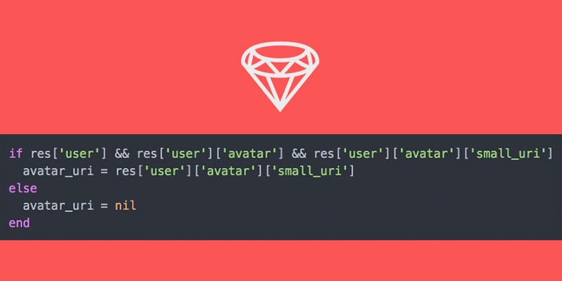

Reduce nil verifications in nested hashes

Rails provide us multiple methods to help developers and we are used to calling them, check the article Living outside Rails for more info ;). To write Ruby scripts return us to the core language.
Recently I work in a script to parse data from an external API. It returns data in JSON format, but some keys are optional so my code is full of these conditionals:
if res['user'] && res['user']['avatar'] && res['user']['avatar']['small_uri']
avatar_uri = res['user']['avatar']['small_uri']
else
avatar_uri = nil
end
I need to check every level in the hash response. This problem can be solved using Hash#dig, but it's only available from Ruby 2.3.0.
For older versions, I created a recursive method that return the value of the given path or nil.
#
# Check if a hash constains the path of keys.
#
# Example:
# h = { a: { b: { c: 1 }}}
#
# dig h, :a, :b # { c: 1 }
# dig h, :a, :b, :c # 1
# dig h, :a, :b, :d # nil
# dig h, :a, :d # nil
# dig h, :a, :d, :c # nil
# dig h, :a, :b, :c, :d # nil
#
# == Parameters:
# hash::
# Hash to check.
# keys::
# Array with the sequence of keys to get value
#
# == Returns:
# Value of the key in the hash or nil
#
def dig(hash, *keys)
if hash[keys.first] && keys.size == 1
return hash[keys.first]
elsif hash[keys.first] && hash[keys.first].is_a?(Hash)
dig(hash[keys.first], *keys[1..keys.size-1])
else
return nil
end
end
Using this method, the code to get avatar_uri from the API can be simplified to:
avatar_uri = dig res, 'user', 'avatar', 'small_uri'
Code
You can grab the code in Github ;).